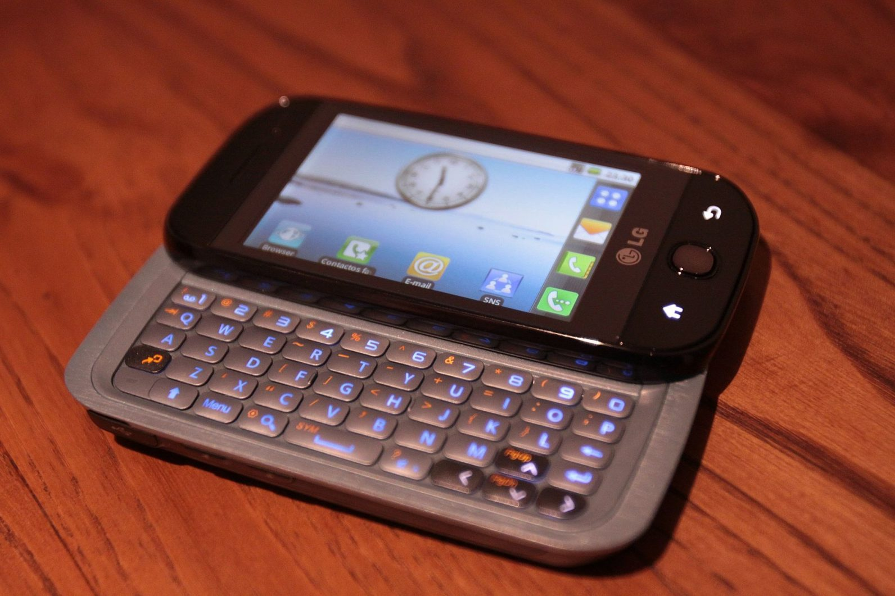
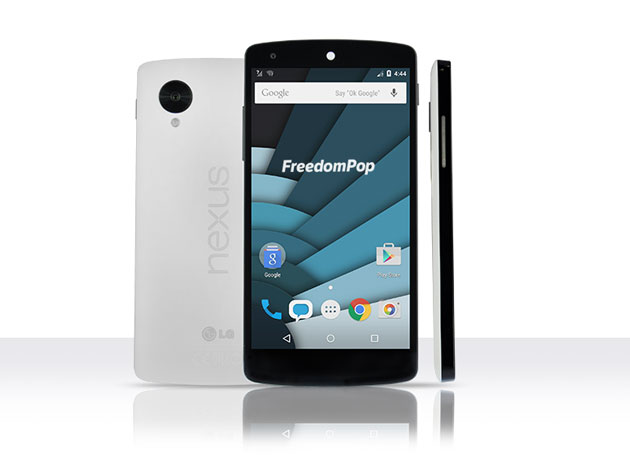
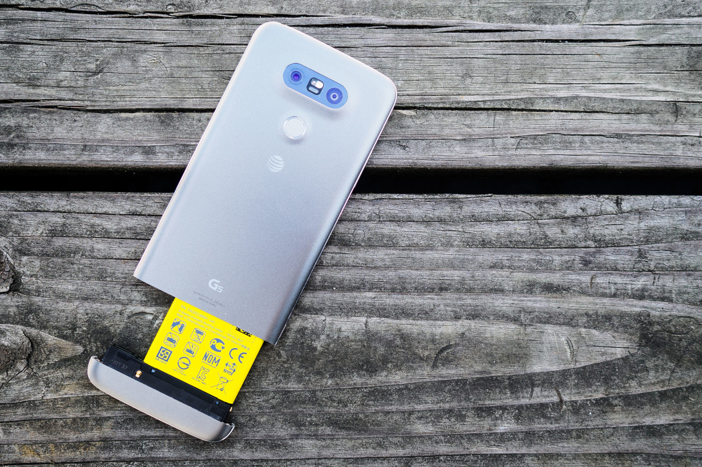
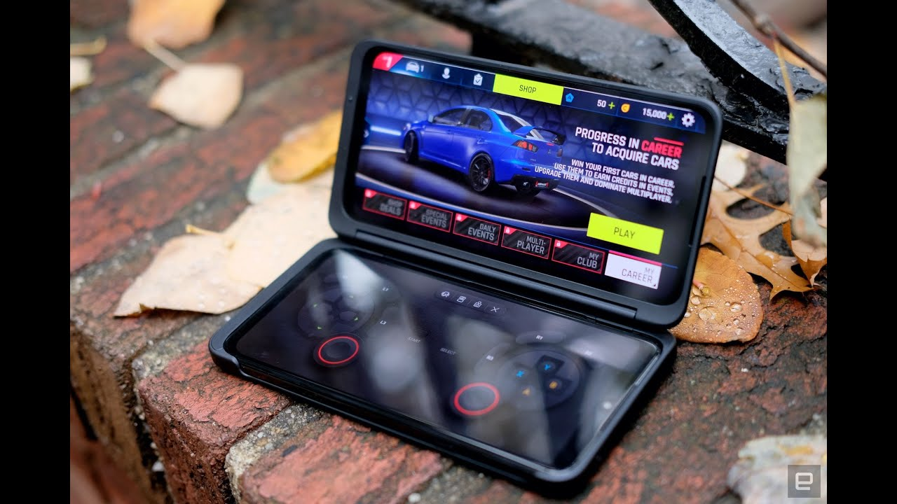
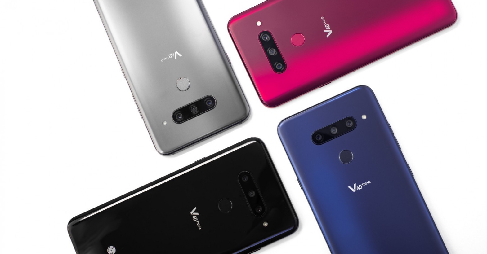

A brief history of LG’s weird and wonderful Android phones
|
LG GW620 The LG GW620, aka the LG Eve, was the company’s first Android phone, released in 2009. It had a resistive touchscreen and a slide-out keyboard that you could use in landscape mode. At launch, it was running Android Cupcake 1.5 software. There’s nothing super unique about it, but being the first one counts, right? |  |
|
LG G Flex and G Flex 2 In 2013, The Korean company released its first phone with a flexible curved display and “self-healing” back, claiming that it could repair minor scratches on its own. The firm released its successor, the G Flex 2, in 2015 with a 6-inch full HD screen and updated hardware. | |
|
LG Nexus series LG’s Nexus series is well-regarded in many tech circles, particularly because Google was behind the design and development of these devices that it had manufactured by other companies. The company debuted with the Nexus 4 in 2012; it was the first phone in the line to have a full HD display and wireless charging. However, with the Nexus 5, the company hit a jackpot. It was a compact phone with a decent camera, and many people loved it. |  |
|
LG G5 The G5 was the company’s first modular phone — remember when those things were a rage? With this device the company let you slide out the battery and swap-in a new one. Other modules included a 32-bit Bang and Olufsen DAC (Digital-to-Analog Converter, which allows for better audio reproduction) and a camera controller. LG carried on the module experiment with the V20, but it never really caught on. |  |
|
LG V8X While LG included a tiny second screen in the LG V10 for notifications, the LG G8X was where the company introduced two screens and also made it a “foldable”. The concept was simple: introduce a second screen through a flip case. There’s no fancy hinge that manages the flexibility of the display. But you could still multitask on two screens. Guess folks at LG also believed in Jugaad (loose translation: a hack) like us Indians. |  |
|
LG V40 The V40 was one of the first phones ever to sport five cameras. The main, telephoto, and ultra-wide angle sensor combo is now common in many devices, but the V40 was an early adopter. Plus, it had an additional wide-angle lens on the front for group selfies. Top marks for camera versatility |  |
|
LG Wing The Wing is one of LG’s modern creations with a rotating screen. It was the first phone — and possibly the last — under the company’s explorer project that aimed to experiment with phone design. When the phone opened up, it had a T-shape with one screen in the landscape mode and another tiny one on the bottom as shown in the picture below. You could probably use the smaller screen to receive updates while you game on the landscape display. |  |